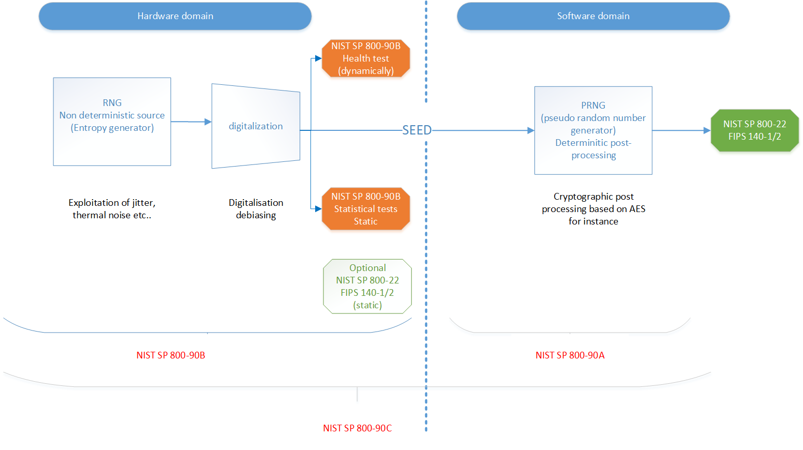
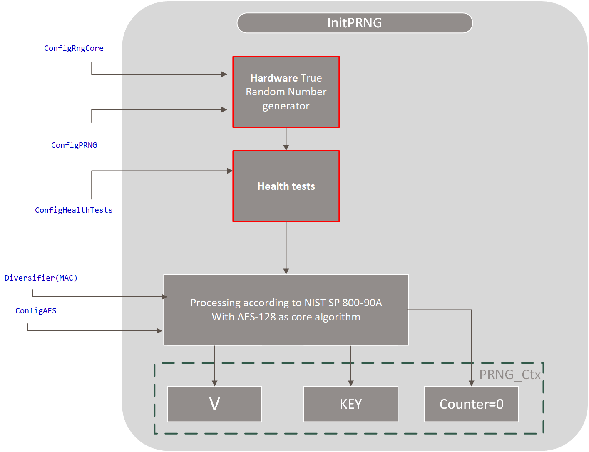
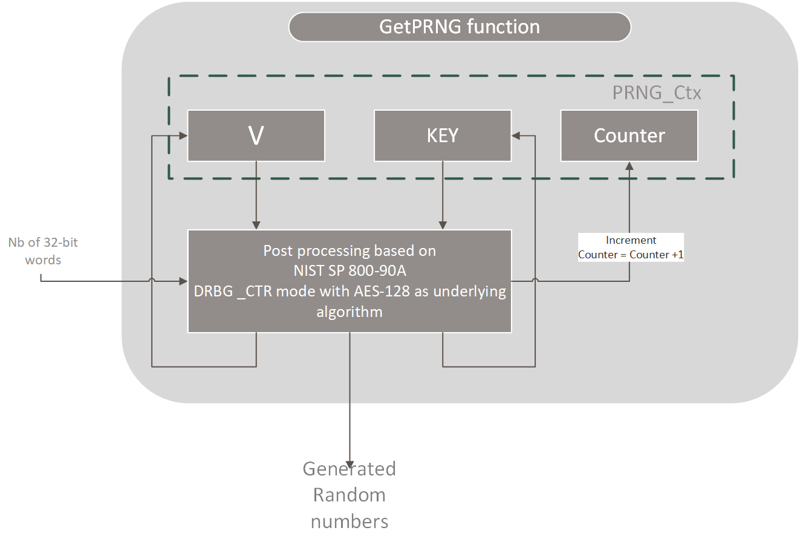

PRNG (Pseudo Random Number Generation)
Bibliography
[1] NIST SP 800-90A: Recommendation for Random Number Generation Using Deterministic Random Bit Generator
NIST SP 800-90A: https://csrc.nist.gov/publications/detail/sp/800-22/rev-1a/final
[2] NIST SP 800-90B: Recommendation for the Entropy Sources Used for Random Bit Generation
NIST SP 800-90B https://nvlpubs.nist.gov/nistpubs/SpecialPublications/NIST.SP.800-90B.pdf
[3] NIST SP 800-90C: Recommendation for Random Bit Generator (RBG) Construction
NIST SP 800-90C: https://csrc.nist.gov/CSRC/media/Publications/sp/800-90c/draft/documents/sp800_90c_second_draft.pdf
Goal of the document
The goal of this document is to describe the functionality of the PRNG library.
- This chapter describes:
the principle of PRNG, especially the combination of the hardware seed and the software post-treatment.
all the supported functions offered by the library
the prototypes of the functions, the parameters, the error code, etc..
the performances of the functions.
Reminder on the random number generation
Need of high quality random numbers
Random numbers generation is a cornerstone primitive for all the cryptographic protocols. Among other usages, random numbers are needed for:
Secret key generation
Cryptographic challenges for authentication
Salt and nonces generation
Random initial values
Etc…
For that reason, the PRNG.lib aims at providing high quality, i.e. cryptographic quality random numbers.
General approach
The general approach of EM9305 is to use a mix of hardware random numbers generation and a post processing performed in software. Next figure shows the general model of the PRNG.
- 2 phases can be distinguished:
A first phase consists in generating random numbers with the hardware. This phase exploits physical noise(jitter, thermal noise, etc…). After digitalization, the random numbers generated constitute a seed. This phase is not deterministic.
The second phase consists in post-processing the seed, with a software post-treatment based on AES.
We chose to be compliant with the NIST standards[1,2,3]. The overall model is compliant with the draft version of NIST SP800-90C[3]. The post-treatment is compliant with NIST SP800-90A[1]. The test of the first phase is compliant with NIST SP800-90B[2].
- Regarding the hardware,four distinct hardware RNG cores are integrated in EM9305:
Core0
Core1
Core2
Core3.
The RNG cores differ by the their oscillators sizes. Core0 is the fastest core and Core3 the slowest one. When initializing the context, one can select the core that is used to seed the RNG (see SetPRNGCtx API )
For the post-treatment we use the DRBG_CTR methodology defined in [1] with AES-128 as underlying algorithm.
Optionally the user can choose to run health tests on the hardware seed. Those tests are defined in [2] and are performed on-line.
Characterization and validation
- The hardware seed is characterized with 3 different statistical tests:
FIPS 140-1 and FIPS 140-2 ad-hoc statistical test suites
NIST SP 800-90B [2] statistical tests suite
NIST SP 800-22 statistical tests suite
- The final outcome after the post-processing is qualified against:
NIST SP 800-22 statistical test suite.
APIs
Context
A PRNG_CTX context structure is defined as the combination of options and working buffers used for the NIST SP 800-90A post-processing. The structure is as follows.
-
struct PRNG_CTX
Structure of PRNG context
Public Members
-
uint8_t ConfigAES
Choose AES SOFTWARE or AES HARDWARE.
-
uint8_t ConfigRngCore
Choose the RNG core.
-
uint8_t ConfigHealthTests
Enable or disable health tests.
-
uint8_t rfu
Padding.
-
uint32_t ConfigPRNG
Choose the number of bits required to have 256 bits of entropy (256 to 640)
-
PRNG_NIST_CTX NistCTX
PRNG NIST context.
-
uint8_t ConfigAES
The NIST working buffer is structured as 3 working buffers:
a key
a value V
a counter
The exact structure is given by the PRNG_NIST_CTX.
-
struct PRNG_NIST_CTX
Structure of PRNG NIST context
APIs overview
- Basically:
The function SetPRNGCtx allows to set the options of the context.
The function InitPRNG aims at initializing the NIST context.
The function GetPRNG exploits the context and generates strong random numbers.
Options
Choice of the hardware core
The choice of the hardware core is performed with PRNG_Core_t enumeration:
Enabling or disabling the health tests
The enabling or disabling of the health tests is performed with the PRNG_Health_t enumeration:
Choice of the underlying AES
The choice of the underlying AES is performed with PRNG_AES_t:
Error status
The status of the functions is of type PRNG_Lib_error_t:
-
enum PRNG_Lib_error_t
Error status for PRNG lib
Values:
-
enumerator SW_PRNG_OK
AES computation successful.
-
enumerator SW_PRNG_HEALTH_REPETITIVE_ERROR
Repetitive health test failed.
-
enumerator SW_PRNG_HEALTH_ADAPTIVE_ERROR
Adaptive health test failed.
-
enumerator SW_PRNG_NOK
PRNG initialization not OK.
-
enumerator SW_PRNG_INCORRECT_RESULT_POINTER
Result pointer is not initialized.
-
enumerator SW_PRNG_NOT_INITIALIZED
PRNG was not initialized. Execute InitPRNG first.
-
enumerator SW_PRNG_OK
SetPRNGCtx
Goal of the function
The function sets the context options. This function only sets the parameters of the context. It does not generate any random number.
Function
-
PRNG_Lib_error_t SetPRNGCtx(PRNG_CTX *Ctx, PRNG_AES_t AESSelect, PRNG_Core_t CoreSelect, uint32_t PRNGConfig, PRNG_Health_t HealthTests)
Set the configuration parameters of a PRNG context.
Note
SetPRNGCtx only defines the parameters. It does not pick any random hardware number and does not initialize the NIST SP800-90A context.
- Parameters
Ctx – [out] Context of the PRNG
AESSelect – [in] Select the underlying AES (AES_HARDWARE or AES_SOFTWARE)
CoreSelect – [in] Select the underlying hardware RNG core (from 0 to 3)
PRNGConfig – [in] Choose the number of bits required to have 256 bits of entropy (256 to 640)
HealthTests – [in] Determine if the health tests will be enabled or not
- Return values
SW_PRNG_OK – PRNG setting successful
- Returns
Error status
Parameters
The context can be configured with 4 options:
ConfigRngCore: The RNG hardware core can be selected. EM9305 embeds four different RNG cores: Core0, Core1, Core2 and Core3. After characterization of EM9305, Core2 appears to be the best option. The core should be selected among the options defined here: Choice of the hardware core
ConfigAES: The underlying AES can be selected:
Either the AES-128 Software is selected
Or the AES-128 Hardware is selected
For best performances, AES hardware will be preferably chosen. Nonetheless, one may prefer the AES software to reduce the peak power consumption. Options are defined here Choice of the underlying AES
ConfigHealthTests: The health tests can be enabled or disabled. To be compliant with NIST SP800-90B, health tests shall be performed. Options are defined here: Enabling or disabling the health tests
Note
When the health tests are enabled, 512 bytes hardware random numbers must be picked during the initialization.
When the health tests are disabled, the number of hardware random bytes to pick depends on the entropy of the hardware random numbers. 32 to 80 bytes are required.
Note
Health tests check that there is no catastrophic default in the hardware generation of the random numbers.
ConfigPRNG: The entropy per bit of the hardware random generator. Depending on the entropy of the hardware generator, one needs to pick more or less hardware random numbers to set up the context.
If the entropy is perfect (=1), 32 hardware random bytes are sufficient to initialize the context.
If the entropy is not perfect(<1), more than 32 hardware random bytes are necessary.
ConfigPRNG should be set to the value: 256/(Entropy per bit).
Note
The entropy is determined during the hardware characterization. It is assumed that the entropy is not worst case 0.4. When the health tests are enabled, the hardware random numbers are taken among the 512 bytes generated for the health tests. Depending on the entropy, the number of AES which are performed during the initialization is more or less important. We recommend to use the default value HW_DEFAULT_ENTROPY_PER_BIT=0.8
Return values
Type |
Description |
OK \ NOK |
|---|---|---|
SW_PRNG_OK |
Setting was successful |
OK |
InitPRNG
Goal of the function
The function sets the context PRNG_NIST_CTX. It consists in 3 phases:
Generation of random values with the hardware random generator.
Optionally, test the quality of the hardware random numbers (i.e. Health tests)
Post process the hardware random numbers with AES to generate the initial context (V,Key). The counter is also set to null value during this phase.
Next figure illustrates the context initialization phase in function of the parameter.
Function
-
PRNG_Lib_error_t InitPRNG(PRNG_CTX *Ctx, uint8_t *MAC)
Initializes the PRNG. Pick hardware random numbers to initialize the NIST SP800-90A context. Perform the health tests if required.
Note
The PRNG must be (re)initialized when the PRNG context has been lost.
- Parameters
Ctx – [in] Context of the PRNG
MAC – [in] A specific string of the device. MAC should be 6 bytes long
- Return values
SW_PRNG_OK – Successful initialization
SW_PRNG_HEALTH_REPETITIVE_ERROR – Repetitive health test failed
SW_PRNG_HEALTH_ADAPTIVE_ERROR – Adaptive health test failed
SW_PRNG_NOK – Something went wrong with underlying AES
- Returns
Error status
Parameters
Ctx A PRNG context
MAC A 6-byte value. MAC is used as a diversifier to ensure that even if the hardware is stuck, two devices would not produce the same random numbers. The BLE MAC address is appropriate for the MAC parameter but any other device specific value is also suitable.
Return values
Type |
Description |
OK \ NOK |
|---|---|---|
SW_PRNG_OK |
Initialization was successful |
OK |
SW_PRNG_HEALTH_REPETITIVE_ERROR |
Repetitive health test detected an issue. Too many successive hardware random numbers were identical. |
NOK |
SW_PRNG_HEALTH_ADAPTIVE_ERROR |
Adaptive health test detected an issue. The distribution of the hardware random is not correct. |
NOK |
SW_PRNG_NOK |
Something went wrong in initialization. |
NOK |
Warning
This function must be called at least once.
However, once the context has been initialized, there is no need to call this function anymore until the next reset.
After a reset, the context is lost. Therefore, it must be reinitialized.
Performances
The execution time of the function InitPRNG depends on the parameters. The number of hardware random numbers that are drawed depends on the entropy and whether the health tests are enabled or not. The number of AES performed depends on the entropy. The performances are obviously better when the AES hardware is used. Next table shows the number of hardware random numbers that are picked, the number of AES executed and the execution time for each configuration.
ID |
Health tests enabled |
Entropy of the HW RNG |
AES |
Number of Hardware random numbers to pick |
Number of AES to perform |
Time in us to generate the HW random numbers |
Time to execute the health tests |
Time for AES |
Total time |
|---|---|---|---|---|---|---|---|---|---|
1 |
NO |
1 |
HW |
32 |
2 |
118 |
0 |
59 |
177 |
2 |
NO |
0.8 |
HW |
40 |
14 |
148 |
0 |
415 |
563 |
3 |
NO |
0.4 |
HW |
80 |
32 |
295 |
0 |
949 |
1244 |
4 |
NO |
1 |
SW |
32 |
2 |
118 |
0 |
500 |
618 |
5 |
NO |
0.8 |
SW |
40 |
14 |
148 |
0 |
3500 |
3648 |
6 |
NO |
0.4 |
SW |
80 |
32 |
295 |
0 |
8000 |
8295 |
7 |
YES |
1 |
HW |
512 |
2 |
1890 |
125 |
59 |
2074 |
8 |
YES |
0.8 |
HW |
512 |
14 |
1890 |
125 |
415 |
2430 |
9 |
YES |
0.4 |
HW |
512 |
32 |
1890 |
125 |
949 |
2964 |
10 |
YES |
1 |
SW |
512 |
2 |
1890 |
125 |
500 |
2515 |
11 |
YES |
0.8 |
SW |
512 |
14 |
1890 |
125 |
3500 |
5515 |
12 |
YES |
0.4 |
SW |
512 |
32 |
1890 |
125 |
8000 |
10015 |
The configuration 8 is the preferred configuration.
Remark on the health tests
Note
When the health tests detect a weakness on the hardware random numbers, a new set of hardware random numbers is picked. There are three trials. If after the three trials, the health tests still fail InitPRNG returns an error status. In that case the PRNG_NIST_CTX is not set. It should be considered as a major failure of the chip.
GetPRNG
Goal of the function
This function generates random values. Internally, it modifies the context according to the specification NIST SP 800-90 A and returns random values issued from a post-treatment on the PRNG context.
This function can be called consecutively 0xFFFFFFFF times without resetting the context.
This function does not pick any random values coming from the true hardware random generator. It is a purely deterministic operation.
The process is illustrated in next figure:
Function
-
PRNG_Lib_error_t GetPRNG(PRNG_CTX *Ctx, uint32_t NumberOfWords, uint32_t *Random)
Generates random values with the PRNG.
Note
The PRNG must be (re)initialized when the PRNG context has been lost.
- Parameters
Ctx – [in] PRNG Ctx
NumberOfWords – [in] Number of 32-bit words to generate.
Random – [out] A buffer of NumberOfWords x 32 bits that receives the random values.
- Return values
SW_PRNG_OK – Successful generation
SW_PRNG_INCORRECT_RESULT_POINTER – Result buffer not initialized.
SW_PRNG_NOT_INITIALIZED – The PRNG was not initialized. Execute InitPRNG first
SW_PRNG_NOK – Something went wrong with underlying AE
- Returns
Error status
Parameters
Ctx: A context PRNG
NumberOfWords: Number of desired 32-bit long random words.
Random: Pointer on the result buffer.
Remark
Note
Internally, the post treatment generates 16 bytes of random numbers per loop iteration. It results that the optimal NumberOfWords required is a multiple of 4. For instance, it would be more efficient to call GetPRNG with NumberOfWords=4, rather than 4 times GetPRNG with NumberOfWords=1.
Also there is a penalty of 2 AES executions, at each call of the GetPRNG function. Therefore it would be more efficient to require several words in one time, rather than calling the function multiple times for the same amount of random numbers.
Return values
Type |
Description |
OK \ NOK |
|---|---|---|
SW_PRNG_OK |
Initialization was successful |
OK |
SW_PRNG_INCORRECT_RESULT_POINTER |
Null pointer. |
NOK |
SW_PRNG_NOK |
Something went wrong in the post-processing. |
NOK |
Performances
The performances of GetPRNG depend on the underlying AES and the number of desired words.
Number of 32-bit words |
Number of bits |
Number of AESs performed |
Time in us with AES HW |
Time in us with AES SW |
|---|---|---|---|---|
2 |
64 |
3 |
86 |
750 |
4 |
128 |
3 |
86 |
750 |
8 |
256 |
4 |
115 |
1000 |
12 |
384 |
5 |
143 |
1250 |
16 |
512 |
6 |
172 |
1500 |
20 |
640 |
7 |
201 |
1750 |
32 |
1024 |
10 |
287 |
2500 |
General Performances
Library location
The lib is located in ROM.
Code size
Size in bytes |
|---|
2172 bytes in ROM |
RAM
Size in bytes |
|---|
44 bytes per context |
Stack
Size in bytes |
|---|
TBD |
Dependencies
PRNG depends on the AES library.
Important remark
Warning
PRNG_CTX shall be located in persistent RAM. Otherwise, the PRNG context will be lost whenever the part goes to sleep mode.
If the context is in persistent RAM, it is enough to invoke InitPRNG only after a reset.
Example
Next code provides a basic example of use.
//--------------------------------------------------------------------------------------
//
// FILE : Example_PRNG.c
//
// Goal : Basic example of PRNG use
//--------------------------------------------------------------------------------------
#include <stdint.h>
#include "AES.h"
#include "PRNG.h"
//======================================================================================
// Example
//======================================================================================
uint8_t Example_PRNG(void) {
uint32_t Error = 0;
PRNG_Lib_error_t SW;
uint32_t Random1[2];
uint32_t Random2[2];
//Create a PRNG context- WARNING it should be located in persistent RAM
PRNG_CTX Ctx;
//Choose the options for this PRNG context
SetPRNGCtx(&Ctx, HW_PRNG_DEFAULT_AES_CONFIG, HW_DEFAULT_RNG_CORE,
HW_PRNG_DEFAULT_CONFIG, HEALTH_TESTS_DEFAULT_CONFIG);
//Alternatively, we could set the context directly without the help of setPRNGCtx function
//Ctx.ConfigRngCore = HW_DEFAULT_RNG_CORE;
//Ctx.ConfigPRNG = HW_PRNG_DEFAULT_CONFIG;
//Ctx.ConfigAES = HW_PRNG_DEFAULT_AES_CONFIG;
//Ctx.ConfigHealthTests = HEALTH_TESTS_DEFAULT_CONFIG;
//Test MAC address
static const uint8_t MAC1[6] = { 0x00, 0x00, 0x00, 0x00, 0x00, 0x01 };
//The PRNG MUST to be initialized once per session, i.e . when the context is lost (RAM erased, reset...)
SW = InitPRNG(&Ctx, (uint8_t*) MAC1);
if (SW != SW_PRNG_OK)
Error++;
//Let's generate some random data
SW = GetPRNG(&Ctx, 2, Random1);
if (SW != SW_PRNG_OK)
Error++;
SW = GetPRNG(&Ctx, 2, Random2);
if (SW != SW_PRNG_OK)
Error++;
//let's check if they are different
if ((Random1[0]==Random2[0]) &&(Random1[1] == Random2[1]))
Error++;
return (Error);
}